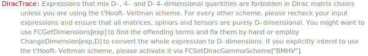

DiracTrace[exp] is the head of Dirac traces. By default the trace is not evaluated. The evaluation occurs only when the option DiracTraceEvaluate is set to True. It is recommended to use DiracSimplify, which will automatically evaluate all Dirac traces in the input expression.
Overview, Contract, DiracEquation, DiracGamma, DiracGammaExpand, DiracTrick, FCGetDiracGammaScheme, FCSetDiracGammaScheme.
There is no automatic evaluation of Dirac traces
DiracTrace[GA[\[Mu], \[Nu]]]\text{tr}\left(\bar{\gamma }^{\mu }.\bar{\gamma }^{\nu }\right)
DiracTrace[GA[\[Mu], \[Nu], \[Rho], \[Sigma]]]\text{tr}\left(\bar{\gamma }^{\mu }.\bar{\gamma }^{\nu }.\bar{\gamma }^{\rho }.\bar{\gamma }^{\sigma }\right)
You can either set the option DiracTraceEvaluate to True or use DiracSimplify.
DiracTrace[GA[\[Mu], \[Nu], \[Rho], \[Sigma]], DiracTraceEvaluate -> True]4 \left(\bar{g}^{\mu \sigma } \bar{g}^{\nu \rho }-\bar{g}^{\mu \rho } \bar{g}^{\nu \sigma }+\bar{g}^{\mu \nu } \bar{g}^{\rho \sigma }\right)
DiracSimplify[DiracTrace[GA[\[Mu], \[Nu], \[Rho], \[Sigma]]]]4 \bar{g}^{\mu \sigma } \bar{g}^{\nu \rho }-4 \bar{g}^{\mu \rho } \bar{g}^{\nu \sigma }+4 \bar{g}^{\mu \nu } \bar{g}^{\rho \sigma }
DiracTrace[GS[p, q, r, s]]
DiracSimplify[%]\text{tr}\left(\left(\bar{\gamma }\cdot \overline{p}\right).\left(\bar{\gamma }\cdot \overline{q}\right).\left(\bar{\gamma }\cdot \overline{r}\right).\left(\bar{\gamma }\cdot \overline{s}\right)\right)
4 \left(\overline{p}\cdot \overline{s}\right) \left(\overline{q}\cdot \overline{r}\right)-4 \left(\overline{p}\cdot \overline{r}\right) \left(\overline{q}\cdot \overline{s}\right)+4 \left(\overline{p}\cdot \overline{q}\right) \left(\overline{r}\cdot \overline{s}\right)
The old methods of evaluating traces by replacing DiracTrace with Tr or TR are deprecated and should not be used anymore. In particular, they are slower are less efficient than using DiracSimplify.
Traces involving \gamma^5 or chirality projectors in 4 dimensions are also possible
DiracTrace[GA[\[Mu], \[Nu], \[Rho], \[Sigma], 5]]
DiracSimplify[%]\text{tr}\left(\bar{\gamma }^{\mu }.\bar{\gamma }^{\nu }.\bar{\gamma }^{\rho }.\bar{\gamma }^{\sigma }.\bar{\gamma }^5\right)
-4 i \bar{\epsilon }^{\mu \nu \rho \sigma }
DiracTrace[GA[\[Mu], \[Nu], \[Rho], \[Sigma], \[Delta], \[Tau], 5]]
DiracSimplify[%]\text{tr}\left(\bar{\gamma }^{\mu }.\bar{\gamma }^{\nu }.\bar{\gamma }^{\rho }.\bar{\gamma }^{\sigma }.\bar{\gamma }^{\delta }.\bar{\gamma }^{\tau }.\bar{\gamma }^5\right)
-4 i \bar{g}^{\delta \mu } \bar{\epsilon }^{\nu \rho \sigma \tau }-4 i \bar{g}^{\delta \tau } \bar{\epsilon }^{\mu \nu \rho \sigma }-4 i \bar{g}^{\mu \tau } \bar{\epsilon }^{\delta \nu \rho \sigma }-4 i \bar{g}^{\nu \rho } \bar{\epsilon }^{\delta \mu \sigma \tau }+4 i \bar{g}^{\nu \sigma } \bar{\epsilon }^{\delta \mu \rho \tau }-4 i \bar{g}^{\rho \sigma } \bar{\epsilon }^{\delta \mu \nu \tau }
DiracTrace[GA[\[Mu], \[Nu], \[Rho], \[Sigma], \[Delta], \[Tau], 6]]
DiracSimplify[%]\text{tr}\left(\bar{\gamma }^{\mu }.\bar{\gamma }^{\nu }.\bar{\gamma }^{\rho }.\bar{\gamma }^{\sigma }.\bar{\gamma }^{\delta }.\bar{\gamma }^{\tau }.\bar{\gamma }^6\right)
-2 \bar{g}^{\delta \mu } \bar{g}^{\nu \tau } \bar{g}^{\rho \sigma }+2 \bar{g}^{\delta \mu } \bar{g}^{\nu \sigma } \bar{g}^{\rho \tau }-2 \bar{g}^{\delta \mu } \bar{g}^{\nu \rho } \bar{g}^{\sigma \tau }+2 \bar{g}^{\delta \tau } \bar{g}^{\mu \sigma } \bar{g}^{\nu \rho }+2 \bar{g}^{\delta \sigma } \bar{g}^{\mu \tau } \bar{g}^{\nu \rho }-2 \bar{g}^{\delta \tau } \bar{g}^{\mu \rho } \bar{g}^{\nu \sigma }-2 \bar{g}^{\delta \rho } \bar{g}^{\mu \tau } \bar{g}^{\nu \sigma }-2 \bar{g}^{\delta \sigma } \bar{g}^{\mu \rho } \bar{g}^{\nu \tau }+2 \bar{g}^{\delta \rho } \bar{g}^{\mu \sigma } \bar{g}^{\nu \tau }+2 \bar{g}^{\delta \tau } \bar{g}^{\mu \nu } \bar{g}^{\rho \sigma }+2 \bar{g}^{\delta \nu } \bar{g}^{\mu \tau } \bar{g}^{\rho \sigma }+2 \bar{g}^{\delta \sigma } \bar{g}^{\mu \nu } \bar{g}^{\rho \tau }-2 \bar{g}^{\delta \nu } \bar{g}^{\mu \sigma } \bar{g}^{\rho \tau }-2 \bar{g}^{\delta \rho } \bar{g}^{\mu \nu } \bar{g}^{\sigma \tau }+2 \bar{g}^{\delta \nu } \bar{g}^{\mu \rho } \bar{g}^{\sigma \tau }-2 i \bar{g}^{\delta \mu } \bar{\epsilon }^{\nu \rho \sigma \tau }-2 i \bar{g}^{\delta \tau } \bar{\epsilon }^{\mu \nu \rho \sigma }-2 i \bar{g}^{\mu \tau } \bar{\epsilon }^{\delta \nu \rho \sigma }-2 i \bar{g}^{\nu \rho } \bar{\epsilon }^{\delta \mu \sigma \tau }+2 i \bar{g}^{\nu \sigma } \bar{\epsilon }^{\delta \mu \rho \tau }-2 i \bar{g}^{\rho \sigma } \bar{\epsilon }^{\delta \mu \nu \tau }
D-dimensional traces that do not involve \gamma^5 are unambiguous.
DiracTrace[(-GSD[q] + SMP["m_e"]) . GAD[\[Nu]] . (GSD[p - q] + SMP["m_e"]) . GAD[\[Mu]]]
DiracSimplify[%]\text{tr}\left(\left(m_e-\gamma \cdot q\right).\gamma ^{\nu }.\left(m_e+\gamma \cdot (p-q)\right).\gamma ^{\mu }\right)
4 m_e^2 g^{\mu \nu }+4 g^{\mu \nu } (p\cdot q)-4 q^2 g^{\mu \nu }-4 p^{\nu } q^{\mu }-4 p^{\mu } q^{\nu }+8 q^{\mu } q^{\nu }
Traces that contain \gamma^5 in D dimensions are scheme-dependent. The default scheme used in FeynCalc is the naive dimension regularization (NDR), where \gamma^5 is assumed to anticommute with all other Dirac matrices. However, chiral traces are ambiguous in NDR, unless the trace contains an even number of \gamma^5. This is why FeynCalc will leave such traces unevaluated.
DiracTrace[GAD[\[Mu], \[Nu], \[Rho]] . GA[5] . GAD[\[Sigma], \[Delta], \[Tau]] . GA[5]]
DiracSimplify[%]\text{tr}\left(\gamma ^{\mu }.\gamma ^{\nu }.\gamma ^{\rho }.\bar{\gamma }^5.\gamma ^{\sigma }.\gamma ^{\delta }.\gamma ^{\tau }.\bar{\gamma }^5\right)
-4 g^{\delta \tau } g^{\mu \sigma } g^{\nu \rho }-4 g^{\delta \sigma } g^{\mu \tau } g^{\nu \rho }+4 g^{\delta \mu } g^{\nu \rho } g^{\sigma \tau }+4 g^{\delta \tau } g^{\mu \rho } g^{\nu \sigma }+4 g^{\delta \rho } g^{\mu \tau } g^{\nu \sigma }+4 g^{\delta \sigma } g^{\mu \rho } g^{\nu \tau }-4 g^{\delta \rho } g^{\mu \sigma } g^{\nu \tau }-4 g^{\delta \tau } g^{\mu \nu } g^{\rho \sigma }-4 g^{\delta \nu } g^{\mu \tau } g^{\rho \sigma }+4 g^{\delta \mu } g^{\nu \tau } g^{\rho \sigma }-4 g^{\delta \sigma } g^{\mu \nu } g^{\rho \tau }+4 g^{\delta \nu } g^{\mu \sigma } g^{\rho \tau }-4 g^{\delta \mu } g^{\nu \sigma } g^{\rho \tau }+4 g^{\delta \rho } g^{\mu \nu } g^{\sigma \tau }-4 g^{\delta \nu } g^{\mu \rho } g^{\sigma \tau }
DiracTrace[GAD[\[Mu], \[Nu], \[Rho]] . GA[5] . GAD[\[Sigma], \[Delta], \[Tau]] . GA[7]]
DiracSimplify[%]\text{tr}\left(\gamma ^{\mu }.\gamma ^{\nu }.\gamma ^{\rho }.\bar{\gamma }^5.\gamma ^{\sigma }.\gamma ^{\delta }.\gamma ^{\tau }.\bar{\gamma }^7\right)
-\frac{1}{2} \;\text{tr}\left(\gamma ^{\mu }.\gamma ^{\nu }.\gamma ^{\rho }.\gamma ^{\sigma }.\gamma ^{\delta }.\gamma ^{\tau }.\bar{\gamma }^5\right)+2 g^{\delta \tau } g^{\mu \sigma } g^{\nu \rho }+2 g^{\delta \sigma } g^{\mu \tau } g^{\nu \rho }-2 g^{\delta \tau } g^{\mu \rho } g^{\nu \sigma }-2 g^{\delta \rho } g^{\mu \tau } g^{\nu \sigma }-2 g^{\delta \sigma } g^{\mu \rho } g^{\nu \tau }+2 g^{\delta \rho } g^{\mu \sigma } g^{\nu \tau }+2 g^{\delta \tau } g^{\mu \nu } g^{\rho \sigma }+2 g^{\delta \nu } g^{\mu \tau } g^{\rho \sigma }-2 g^{\delta \mu } g^{\nu \tau } g^{\rho \sigma }+2 g^{\delta \sigma } g^{\mu \nu } g^{\rho \tau }-2 g^{\delta \nu } g^{\mu \sigma } g^{\rho \tau }+2 g^{\delta \mu } g^{\nu \sigma } g^{\rho \tau }-2 g^{\delta \rho } g^{\mu \nu } g^{\sigma \tau }+2 g^{\delta \nu } g^{\mu \rho } g^{\sigma \tau }-2 g^{\delta \mu } g^{\nu \rho } g^{\sigma \tau }
Over the years people invented many different schemes to deal with \gamma^5 in dimensional regularization. Currently, only the t’Hooft-Veltman-Breitenlohner-Maison (BMHV) prescription is fully supported in FeynCalc.
FCSetDiracGammaScheme["BMHV"];
DiracSimplify[DiracTrace[GAD[\[Mu], \[Nu], \[Rho]] . GA[5] . GAD[\[Sigma], \[Delta], \[Tau]] . GA[7]]]4 i \bar{\epsilon }^{\nu \rho \sigma \tau } \hat{g}^{\delta \mu }+16 \hat{g}^{\nu \tau } \hat{g}^{\rho \sigma } \hat{g}^{\delta \mu }-8 g^{\nu \tau } \hat{g}^{\rho \sigma } \hat{g}^{\delta \mu }-16 \hat{g}^{\nu \sigma } \hat{g}^{\rho \tau } \hat{g}^{\delta \mu }+8 g^{\nu \sigma } \hat{g}^{\rho \tau } \hat{g}^{\delta \mu }-8 \hat{g}^{\nu \tau } g^{\rho \sigma } \hat{g}^{\delta \mu }+4 g^{\nu \tau } g^{\rho \sigma } \hat{g}^{\delta \mu }+8 \hat{g}^{\nu \sigma } g^{\rho \tau } \hat{g}^{\delta \mu }-4 g^{\nu \sigma } g^{\rho \tau } \hat{g}^{\delta \mu }+4 g^{\nu \rho } g^{\sigma \tau } \hat{g}^{\delta \mu }-4 i \bar{\epsilon }^{\mu \rho \sigma \tau } \hat{g}^{\delta \nu }+4 i \bar{\epsilon }^{\mu \nu \sigma \tau } \hat{g}^{\delta \rho }-2 i \bar{\epsilon }^{\nu \rho \sigma \tau } g^{\delta \mu }+2 i \bar{\epsilon }^{\mu \rho \sigma \tau } g^{\delta \nu }-2 i \bar{\epsilon }^{\mu \nu \sigma \tau } g^{\delta \rho }+2 i \bar{\epsilon }^{\mu \nu \rho \tau } g^{\delta \sigma }+2 i \bar{\epsilon }^{\mu \nu \rho \sigma } g^{\delta \tau }-4 i \bar{\epsilon }^{\delta \nu \rho \tau } \hat{g}^{\mu \sigma }+4 i \bar{\epsilon }^{\delta \nu \rho \sigma } \hat{g}^{\mu \tau }+2 i \bar{\epsilon }^{\delta \rho \sigma \tau } g^{\mu \nu }-2 i \bar{\epsilon }^{\delta \nu \sigma \tau } g^{\mu \rho }+2 i \bar{\epsilon }^{\delta \nu \rho \tau } g^{\mu \sigma }-2 i \bar{\epsilon }^{\delta \nu \rho \sigma } g^{\mu \tau }+4 i \bar{\epsilon }^{\delta \mu \rho \tau } \hat{g}^{\nu \sigma }+16 \hat{g}^{\delta \rho } \hat{g}^{\mu \tau } \hat{g}^{\nu \sigma }-8 g^{\delta \rho } \hat{g}^{\mu \tau } \hat{g}^{\nu \sigma }+4 g^{\delta \tau } g^{\mu \rho } \hat{g}^{\nu \sigma }-8 \hat{g}^{\delta \rho } g^{\mu \tau } \hat{g}^{\nu \sigma }+4 g^{\delta \rho } g^{\mu \tau } \hat{g}^{\nu \sigma }-4 i \bar{\epsilon }^{\delta \mu \rho \sigma } \hat{g}^{\nu \tau }-16 \hat{g}^{\delta \rho } \hat{g}^{\mu \sigma } \hat{g}^{\nu \tau }+8 g^{\delta \rho } \hat{g}^{\mu \sigma } \hat{g}^{\nu \tau }+4 g^{\delta \sigma } g^{\mu \rho } \hat{g}^{\nu \tau }+8 \hat{g}^{\delta \rho } g^{\mu \sigma } \hat{g}^{\nu \tau }-4 g^{\delta \rho } g^{\mu \sigma } \hat{g}^{\nu \tau }+2 i \bar{\epsilon }^{\delta \mu \sigma \tau } g^{\nu \rho }-4 g^{\delta \tau } \hat{g}^{\mu \sigma } g^{\nu \rho }-4 g^{\delta \sigma } \hat{g}^{\mu \tau } g^{\nu \rho }+2 g^{\delta \tau } g^{\mu \sigma } g^{\nu \rho }+2 g^{\delta \sigma } g^{\mu \tau } g^{\nu \rho }-2 i \bar{\epsilon }^{\delta \mu \rho \tau } g^{\nu \sigma }-8 \hat{g}^{\delta \rho } \hat{g}^{\mu \tau } g^{\nu \sigma }+4 g^{\delta \rho } \hat{g}^{\mu \tau } g^{\nu \sigma }-2 g^{\delta \tau } g^{\mu \rho } g^{\nu \sigma }+4 \hat{g}^{\delta \rho } g^{\mu \tau } g^{\nu \sigma }-2 g^{\delta \rho } g^{\mu \tau } g^{\nu \sigma }+2 i \bar{\epsilon }^{\delta \mu \rho \sigma } g^{\nu \tau }+8 \hat{g}^{\delta \rho } \hat{g}^{\mu \sigma } g^{\nu \tau }-4 g^{\delta \rho } \hat{g}^{\mu \sigma } g^{\nu \tau }-2 g^{\delta \sigma } g^{\mu \rho } g^{\nu \tau }-4 \hat{g}^{\delta \rho } g^{\mu \sigma } g^{\nu \tau }+2 g^{\delta \rho } g^{\mu \sigma } g^{\nu \tau }-4 i \bar{\epsilon }^{\delta \mu \nu \tau } \hat{g}^{\rho \sigma }-16 \hat{g}^{\delta \nu } \hat{g}^{\mu \tau } \hat{g}^{\rho \sigma }+8 g^{\delta \nu } \hat{g}^{\mu \tau } \hat{g}^{\rho \sigma }-4 g^{\delta \tau } g^{\mu \nu } \hat{g}^{\rho \sigma }+8 \hat{g}^{\delta \nu } g^{\mu \tau } \hat{g}^{\rho \sigma }-4 g^{\delta \nu } g^{\mu \tau } \hat{g}^{\rho \sigma }-8 g^{\delta \mu } \hat{g}^{\nu \tau } \hat{g}^{\rho \sigma }+4 g^{\delta \mu } g^{\nu \tau } \hat{g}^{\rho \sigma }+4 i \bar{\epsilon }^{\delta \mu \nu \sigma } \hat{g}^{\rho \tau }+16 \hat{g}^{\delta \nu } \hat{g}^{\mu \sigma } \hat{g}^{\rho \tau }-8 g^{\delta \nu } \hat{g}^{\mu \sigma } \hat{g}^{\rho \tau }-4 g^{\delta \sigma } g^{\mu \nu } \hat{g}^{\rho \tau }-8 \hat{g}^{\delta \nu } g^{\mu \sigma } \hat{g}^{\rho \tau }+4 g^{\delta \nu } g^{\mu \sigma } \hat{g}^{\rho \tau }+8 g^{\delta \mu } \hat{g}^{\nu \sigma } \hat{g}^{\rho \tau }-4 g^{\delta \mu } g^{\nu \sigma } \hat{g}^{\rho \tau }+2 i \bar{\epsilon }^{\delta \mu \nu \tau } g^{\rho \sigma }+8 \hat{g}^{\delta \nu } \hat{g}^{\mu \tau } g^{\rho \sigma }-4 g^{\delta \nu } \hat{g}^{\mu \tau } g^{\rho \sigma }+2 g^{\delta \tau } g^{\mu \nu } g^{\rho \sigma }-4 \hat{g}^{\delta \nu } g^{\mu \tau } g^{\rho \sigma }+2 g^{\delta \nu } g^{\mu \tau } g^{\rho \sigma }+4 g^{\delta \mu } \hat{g}^{\nu \tau } g^{\rho \sigma }-2 g^{\delta \mu } g^{\nu \tau } g^{\rho \sigma }-2 i \bar{\epsilon }^{\delta \mu \nu \sigma } g^{\rho \tau }-8 \hat{g}^{\delta \nu } \hat{g}^{\mu \sigma } g^{\rho \tau }+4 g^{\delta \nu } \hat{g}^{\mu \sigma } g^{\rho \tau }+2 g^{\delta \sigma } g^{\mu \nu } g^{\rho \tau }+4 \hat{g}^{\delta \nu } g^{\mu \sigma } g^{\rho \tau }-2 g^{\delta \nu } g^{\mu \sigma } g^{\rho \tau }-4 g^{\delta \mu } \hat{g}^{\nu \sigma } g^{\rho \tau }+2 g^{\delta \mu } g^{\nu \sigma } g^{\rho \tau }+2 i \bar{\epsilon }^{\delta \mu \nu \rho } g^{\sigma \tau }+4 \hat{g}^{\delta \rho } g^{\mu \nu } g^{\sigma \tau }-2 g^{\delta \rho } g^{\mu \nu } g^{\sigma \tau }-4 \hat{g}^{\delta \nu } g^{\mu \rho } g^{\sigma \tau }+2 g^{\delta \nu } g^{\mu \rho } g^{\sigma \tau }-2 g^{\delta \mu } g^{\nu \rho } g^{\sigma \tau }
Keep in mind that the BMHV scheme violates axial Ward identities and requires special model-dependent counter-terms to restore those. Therefore, just setting FCSetDiracGammaScheme[“BMHV”] does not automatically resolve all your troubles with \gamma^5 in D-dimensions. The proper treatment of \gamma^5 in dimensional regularization is an intricate issue that cannot be boiled down to a simple and universal recipe. FeynCalc merely carries out the algebraic operations that you request, but it is still your task to ensure that what you do makes sense.
Traces that are free of \gamma^5 but contain both 4- and D-dimensional Dirac matrices may appear in calculations that use the BMHV prescription, but they do not make sense in NDR. Therefore, their evaluation will be successful only if the correct scheme is used.
FCSetDiracGammaScheme["NDR"];DiracTrace[(-GSD[q] + SMP["m_e"]) . GA[\[Nu]] . (GS[p] - GSD[q] + SMP["m_e"]) . GA[\[Mu]]]
DiracSimplify[%]\text{tr}\left(\left(m_e-\gamma \cdot q\right).\bar{\gamma }^{\nu }.\left(\bar{\gamma }\cdot \overline{p}+m_e-\gamma \cdot q\right).\bar{\gamma }^{\mu }\right)

\text{\$Aborted}
FCSetDiracGammaScheme["BMHV"];ex = DiracSimplify[DiracTrace[(-GSD[q] + SMP["m_e"]) . GA[\[Nu]] . (GS[p] - GSD[q] + SMP["m_e"]) . GA[\[Mu]]] ]4 m_e^2 \bar{g}^{\mu \nu }+4 \bar{g}^{\mu \nu } \left(\overline{p}\cdot \overline{q}\right)-4 q^2 \bar{g}^{\mu \nu }-4 \overline{p}^{\nu } \overline{q}^{\mu }-4 \overline{p}^{\mu } \overline{q}^{\nu }+8 \overline{q}^{\mu } \overline{q}^{\nu }
ex // FCE // StandardForm
(*-4 FV[p, \[Nu]] FV[q, \[Mu]] - 4 FV[p, \[Mu]] FV[q, \[Nu]] + 8 FV[q, \[Mu]] FV[q, \[Nu]] + 4 MT[\[Mu], \[Nu]] SMP["m_e"]^2 + 4 MT[\[Mu], \[Nu]] SP[p, q] - 4 MT[\[Mu], \[Nu]] SPD[q, q]*)FCSetDiracGammaScheme["NDR"];Notice that in this case the result contains 4- and D-dimensional tensors.
Traces involving \gamma^5 in the BMHV scheme are evaluated using West’s formula. It is possible to turn it off by setting the option West to False, but then the evaluation will require much more time.
FCSetDiracGammaScheme["BMHV"];
AbsoluteTiming[r1 = DiracSimplify[DiracTrace[GAD[\[Mu], \[Nu], \[Rho]] . GA[5] . GAD[\[Sigma], \[Delta], \[Tau]] . GA[7]]];]\{0.225294,\text{Null}\}
AbsoluteTiming[r2 = DiracSimplify[DiracTrace[GAD[\[Mu], \[Nu], \[Rho]] . GA[5] . GAD[\[Sigma], \[Delta], \[Tau]] . GA[7],
West -> False]];]\{1.82085,\text{Null}\}
r1 === r2\text{True}
FCSetDiracGammaScheme["NDR"];
ClearAll[r1, r2]If you know that traces with one \gamma^5 do not contribute to your final result, use the new NDR-Discard scheme to put them to zero
FCSetDiracGammaScheme["NDR-Discard"];
DiracSimplify[DiracTrace[GAD[\[Mu], \[Nu], \[Rho]] . GA[5] . GAD[\[Sigma], \[Delta], \[Tau]] . GA[7]]]2 g^{\delta \tau } g^{\mu \sigma } g^{\nu \rho }+2 g^{\delta \sigma } g^{\mu \tau } g^{\nu \rho }-2 g^{\delta \mu } g^{\nu \rho } g^{\sigma \tau }-2 g^{\delta \tau } g^{\mu \rho } g^{\nu \sigma }-2 g^{\delta \rho } g^{\mu \tau } g^{\nu \sigma }-2 g^{\delta \sigma } g^{\mu \rho } g^{\nu \tau }+2 g^{\delta \rho } g^{\mu \sigma } g^{\nu \tau }+2 g^{\delta \tau } g^{\mu \nu } g^{\rho \sigma }+2 g^{\delta \nu } g^{\mu \tau } g^{\rho \sigma }-2 g^{\delta \mu } g^{\nu \tau } g^{\rho \sigma }+2 g^{\delta \sigma } g^{\mu \nu } g^{\rho \tau }-2 g^{\delta \nu } g^{\mu \sigma } g^{\rho \tau }+2 g^{\delta \mu } g^{\nu \sigma } g^{\rho \tau }-2 g^{\delta \rho } g^{\mu \nu } g^{\sigma \tau }+2 g^{\delta \nu } g^{\mu \rho } g^{\sigma \tau }
FCSetDiracGammaScheme["NDR"];Sorting of the matrices inside 4-dimensional traces helps to avoid some spurious terms.
DiracTrace[GA[\[Mu], \[Nu], 5, \[Rho], \[Sigma], \[Tau], \[Kappa]], DiracTraceEvaluate -> True] -
DiracTrace[GA[\[Mu], \[Nu], \[Rho], \[Sigma], \[Tau], \[Kappa], 5],DiracTraceEvaluate -> True] // Expand0
When the sorting is turned off via Sort to True, one may obtain some spurious terms that vanish by Schouten’s identity.
DiracTrace[GA[\[Mu], \[Nu], 5, \[Rho], \[Sigma], \[Tau], \[Kappa]], DiracTraceEvaluate -> True, Sort -> False] -
DiracTrace[GA[\[Mu], \[Nu], \[Rho], \[Sigma], \[Tau], \[Kappa], 5],DiracTraceEvaluate -> True, Sort -> False] // Expand4 i \bar{g}^{\kappa \mu } \bar{\epsilon }^{\nu \rho \sigma \tau }-4 i \bar{g}^{\kappa \nu } \bar{\epsilon }^{\mu \rho \sigma \tau }-4 i \bar{g}^{\kappa \sigma } \bar{\epsilon }^{\mu \nu \rho \tau }+4 i \bar{g}^{\kappa \tau } \bar{\epsilon }^{\mu \nu \rho \sigma }+4 i \bar{g}^{\mu \rho } \bar{\epsilon }^{\kappa \nu \sigma \tau }-4 i \bar{g}^{\nu \rho } \bar{\epsilon }^{\kappa \mu \sigma \tau }+4 i \bar{g}^{\rho \sigma } \bar{\epsilon }^{\kappa \mu \nu \tau }-4 i \bar{g}^{\rho \tau } \bar{\epsilon }^{\kappa \mu \nu \sigma }
The trace of the unit matrix in the Dirac space is fixed to 4, which is the standard choice in dimensional regularization.
DiracTrace[1]
DiracSimplify[%]\text{tr}(1)
4
If, for some reason, this value must be modified, one can do so using the option TraceOfOne.
DiracTrace[1, TraceOfOne -> D, DiracTraceEvaluate -> True]D
DiracSimplify[DiracTrace[GAD[\[Mu], \[Nu]], TraceOfOne -> D]]D g^{\mu \nu }
Since FeynCalc 9.3 it is also possible to compute traces of Dirac matrices with Cartesian or temporal indices. However, the support of nonrelativistic calculations is a very new feature, so that things may not work as smooth as they do for manifestly Lorentz covariant expressions.
DiracTrace[CGAD[i, j, k, l]]
DiracSimplify[%]\text{tr}\left(\gamma ^i.\gamma ^j.\gamma ^k.\gamma ^l\right)
4 \delta ^{il} \delta ^{jk}-4 \delta ^{ik} \delta ^{jl}+4 \delta ^{ij} \delta ^{kl}
DiracTrace[CGA[i, j, k, l] . GA[6] . CGA[m, n]]
DiracSimplify[%]\text{tr}\left(\overline{\gamma }^i.\overline{\gamma }^j.\overline{\gamma }^k.\overline{\gamma }^l.\bar{\gamma }^6.\overline{\gamma }^m.\overline{\gamma }^n\right)
-2 \bar{\delta }^{in} \bar{\delta }^{jm} \bar{\delta }^{kl}+2 \bar{\delta }^{im} \bar{\delta }^{jn} \bar{\delta }^{kl}-2 \bar{\delta }^{ij} \bar{\delta }^{kl} \bar{\delta }^{mn}+2 \bar{\delta }^{in} \bar{\delta }^{jl} \bar{\delta }^{km}-2 \bar{\delta }^{il} \bar{\delta }^{jn} \bar{\delta }^{km}-2 \bar{\delta }^{im} \bar{\delta }^{jl} \bar{\delta }^{kn}+2 \bar{\delta }^{il} \bar{\delta }^{jm} \bar{\delta }^{kn}-2 \bar{\delta }^{in} \bar{\delta }^{jk} \bar{\delta }^{lm}+2 \bar{\delta }^{ik} \bar{\delta }^{jn} \bar{\delta }^{lm}-2 \bar{\delta }^{ij} \bar{\delta }^{kn} \bar{\delta }^{lm}+2 \bar{\delta }^{im} \bar{\delta }^{jk} \bar{\delta }^{ln}-2 \bar{\delta }^{ik} \bar{\delta }^{jm} \bar{\delta }^{ln}+2 \bar{\delta }^{ij} \bar{\delta }^{km} \bar{\delta }^{ln}-2 \bar{\delta }^{il} \bar{\delta }^{jk} \bar{\delta }^{mn}+2 \bar{\delta }^{ik} \bar{\delta }^{jl} \bar{\delta }^{mn}